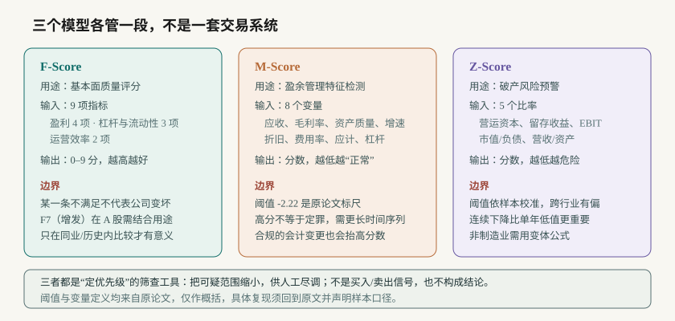
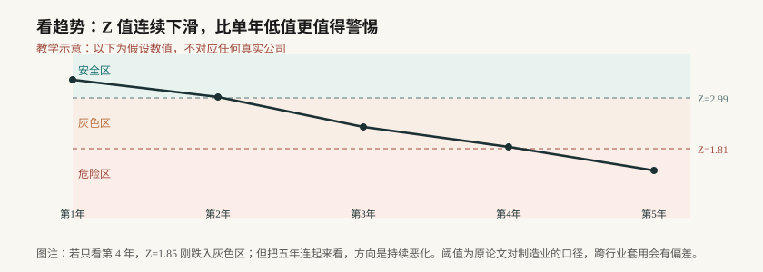

量化财务模型：把评分当筛查，不当信号
F-Score、M-Score、Z-Score 用固定公式把多家公司放进同一把尺子。它们能快速缩小需要人工细看的范围，但阈值来自特定样本，评分也不是涨跌预测；把它们当交易信号，是把筛查工具用错了地方。
量化模型的定位
量化财务模型把一组可复算的指标压成一个分数，好处是客观、可重复、能同时处理大量公司。它们的共同点也是共同局限：公式与阈值来自某个特定样本（市场、行业、时间段），换一个样本就不一定成立。

先把定位说清楚：量化模型是筛查工具，用来定优先级、缩小范围；它们不是交易信号，不能从分数直接推出买卖。原因很简单：模型的评估对象是“财务特征是否异常或变差”，而不是“股价接下来会怎么走”。
本页提到的阈值与变量定义均来自各自原论文；复现时需声明样本区间、行业与口径。原始研究报告了各自的预测效果，但后续在不同市场与时期的复现结果并不一致，因此本页不给出任何“超额收益”数字。
F-Score 的九项指标
Piotroski F-Score 用 9 个“是/否”判断给基本面打分，每项满足计1分，总分 0–9。它衡量的是“基本面是否在变好”，而不是“公司大不大”。9 项分为三类：
| 类别 | 编号 | 指标 | 得分条件 |
|---|---|---|---|
| 盈利能力 | F1 | 总资产收益率 ROA | 本期 ROA 大于 0 |
| 盈利能力 | F2 | 经营活动现金流 CFO | 本期 CFO 大于 0 |
| 盈利能力 | F3 | ROA 变动 | 本期 ROA 高于上期 |
| 盈利能力 | F4 | 应计项 | CFO 大于净利润（应计项为负） |
| 杠杆与流动性 | F5 | 杠杆变动 | 资产负债率下降 |
| 杠杆与流动性 | F6 | 流动性变动 | 流动比率上升 |
| 杠杆与流动性 | F7 | 股权融资 | 本期未发行新股（增发计 0 分） |
| 运营效率 | F8 | 毛利率变动 | 毛利率上升 |
| 运营效率 | F9 | 资产周转率变动 | 周转率上升 |
使用时的三个提醒：一是每一项的分子分母要与同比期一致，否则“变动”会被口径差异污染；二是 F7 在 A 股需结合融资用途——定向增发可能是扰张产能，不一定是坏事，所以它更适合作为尽调线索而非扣分结论；三是分数只有放在同业或公司自己的历史序列里才有比较意义。
M-Score 的八个变量
Beneish M-Score 用 8 个变量的加权组合来判断财务数据的“盈余管理特征”，其提出的阈值是 -2.22：低于该值被归为非操纵样本，高于该值则标记为需进一步核查。这只是一个统计分类标尺，不是法律意义上的造假认定。
| 变量 | 含义 | 常见的错误解释 |
|---|---|---|
| DSRI | 应收/营收比率指数 | 应收增速高于营收只是线索，需先排除信用政策、并表与季节性 |
| GMI | 毛利率指数 | 毛利率下滑不等于造假，也可能是行业竞争或成本上涨 |
| AQI | 资产质量指数 | 非流动资产占比上升可能来自真实投资，不必然是费用资本化 |
| SGI | 营收增长率指数 | 高增长只是动机更强，不代表已经发生不当行为 |
| DEPI | 折旧率变动指数 | 折旧变慢需看会计估计变更的披露与理由 |
| SGAI | 销售管理费用指数 | 费用率变动受收入结构影响，需分开看总额与占比 |
| ACCRUAL | 总应计项/总资产 | 应计高是重要线索，但受业务模式影响 |
| LEVI | 杠杆指数 | 负债率上升可能来自扩张，需看具体债务用途 |
两个边界：一是应计项与指数都需要两期可比数据，合并范围变化会直接干扰结果；二是阈值 -2.22 源自原论文的特定样本，换到 A 股或其他时期可能需要重新校准，引用时应声明这一点。
实务上常把 F-Score 与 M-Score 搭配：F-Score 选“基本面在变好”的公司，M-Score 把“财务特征异常”的挑出来再看一遍——两者都是筛查，不能替代对报表附注与公告的阅读。
Z-Score 与趋势
Altman Z-Score 用 5 个比率预测企业陷入财务困境的可能性，原始版本面向公开上市的制造业公司：
| 变量 | 定义 | 含义 |
|---|---|---|
| X₁ | 营运资本 / 总资产 | 短期流动性 |
| X₂ | 留存收益 / 总资产 | 累计盈利能力 |
| X₃ | EBIT / 总资产 | 资产的盈利能力 |
| X₄ | 股权市值 / 负债账面价值 | 资本结构稳定性 |
| X₅ | 营业收入 / 总资产 | 资产周转效率 |
原始阈值：Z > 2.99 为安全区，1.81–2.99 为灰色区，Z < 1.81 为危险区。这三个界限来自原论文的样本与行业口径，直接套到不同市场或行业会有偏差；Altman 后来也提出了针对非上市企业与非制造业的变体（如去掉 X₅ 的版本），使用时要声明用的是哪一版及其适用对象。

组合使用与打分卡
三个模型各有侧重，实践中常把它们放在同一张筛查表里：用 F-Score 看基本面方向，用 M-Score 标记需要细看的披露，用 Z-Score 跟踪困境风险的趋势。它们回答的是不同问题，不能相互替代。
如果想把多个维度合起来，可以自建打分卡。下面是一个示例框架——权重与分值是主观设定的，不是行业标准：
| 维度 | 权重示意 | 包含指标 |
|---|---|---|
| 盈利能力 | 30 分 | ROE、毛利率趋势、净利率水平 |
| 成长性 | 25 分 | 营收增速、净利润增速、经营现金流增速 |
| 财务健康 | 25 分 | F-Score、M-Score 筛查、Z-Score 趋势 |
| 估值 | 20 分 | PE 分位数、PB 分位数、股息率 |
自建打分卡的三个纪律：一，权重必须事先固定并写下原因，不能看到结果后再调；二，回测要留出样本外区间，并警惕前视偏差（用了当时不可能得到的数据）；三，把打分卡当作排序工具，而不是买卖信号——分数高只意味着“优先研究”。
F-Score 工作台
逐项勾选满足的条件，右下显示得分。默认状态勾选了 7 项（F6 流动性与 F7 股权融资未勾选），总分即 7 分，可手工复核。
九项逐条判断
每一项都应基于同一同比期的数据；勾选代表“满足得分条件”。
得分本身不是结论：同样是 7 分，一家靠毛利率提升、一家靠降杠杆，含意并不相同；把它当作需要继续追问的起点。
核查清单与自测
声明模型版本、样本区间与行业口径（特别是 Z-Score 的适用对象）。
检查两期数据的合并范围与口径是否一致，避免把口径变化当成指标变化。
分数只用于排序与定优先级，并回到附注与公告核实具体事项。
看趋势多于看单点：连续几期的方向比某一期的绝对水平更重要。
自建打分卡时，权重先固定、回测留出样本外，并声明它不是交易信号。
自测一：F-Score 只有 3 分，可以断定这家公司要出问题吗？
不能。F-Score 衡量的是“基本面是否在变好”，低分只说明改善项少，可能对应成长期的高投入、周期底部或一次性因素；应逐项看是哪几项不满足，并回到报表与附注找原因。
自测二：M-Score 高于 -2.22，应该直接卖出吗？
不应该。高于阈值只说明财务特征与历史上被认定操纵的样本相似，需要投入更多精力核查（尤其是应收、收入确认、费用资本化与关联交易）。它既不是定罪，也不是交易信号。
结论：量化模型把“筛选”这件重复劳动标准化了，这正是它们的价值。价值的上限也很清楚：它们只能决定先看哪几家，不能替你判断事实与估值。
依据与边界
本页所有数值与图例均为教学示意，不指向任何真实公司，也不构成投资建议。三个模型均属学术研究提出的分析工具，不是会计准则或监管要求；阈值与系数来自各自原论文的样本，跨市场套用存在偏差。
本页不给出任何复现的“超额收益”或“胜率”数字，因为这类结果对样本、时期与构造方式高度敏感，且不同复现结论并不一致；需要引用时，应直接回到原论文及后续文献并声明口径。